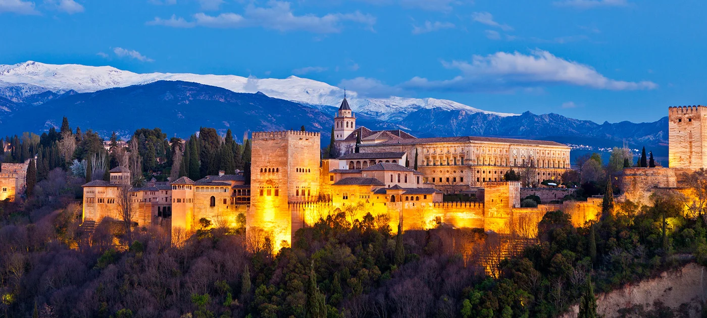
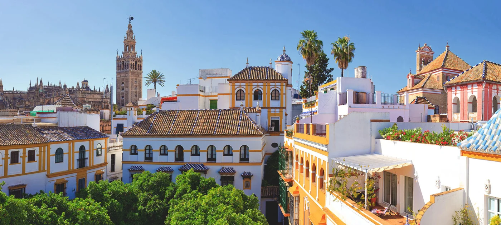
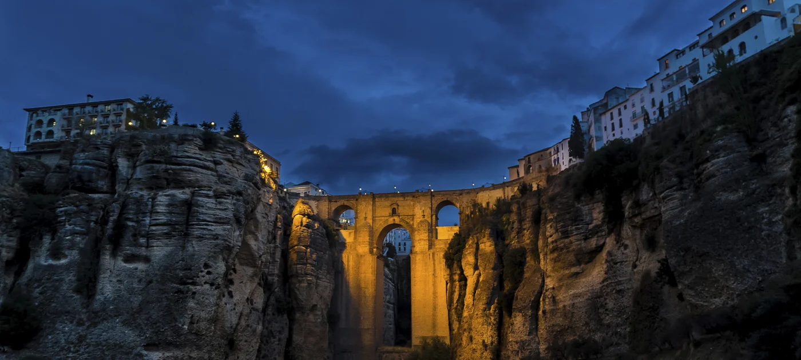
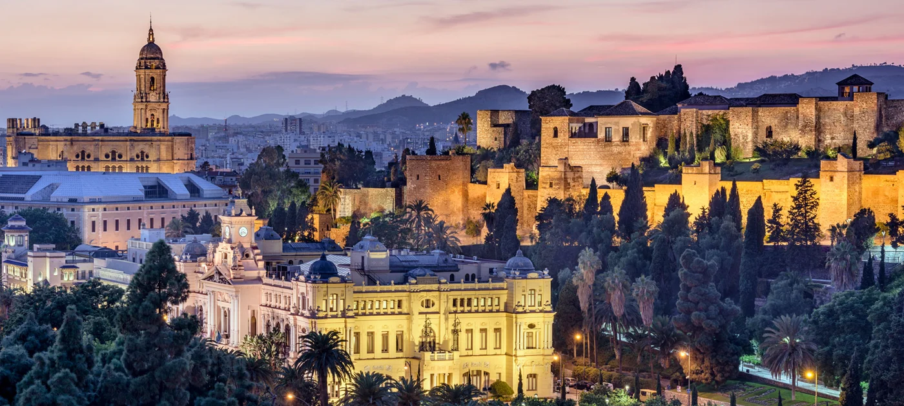
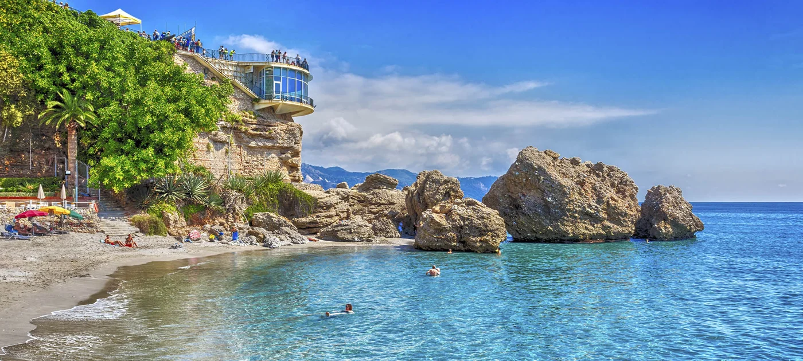
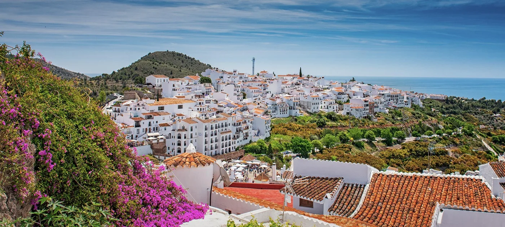
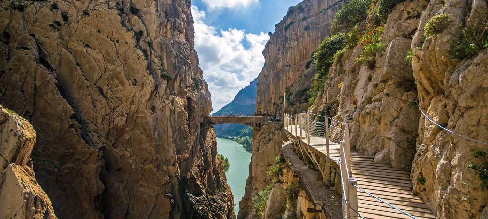
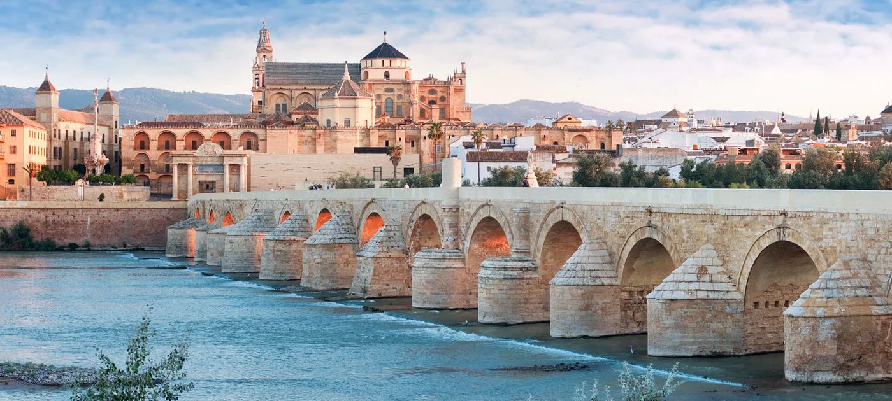

塞维利亚室内＋庭院1—1.5h
皮拉托斯之家 · Casa de Pilatos
看贵族庭院、彩色瓷砖、雕塑和木雕天花，比再加一座大型宫殿更容易控制节奏。孩子可以找瓷砖的几何图案；长辈选底层＋花园的短线，不强求楼上。
怎么换：D3替换陶艺／做菜课程，下午仍留休息。若已经对建筑疲劳，就选下面的水族馆，不必两个都去。
北京出发约10天，夫妻带一老一小。塞维利亚慢慢倒时差，再开一辆小车，穿过龙达的峡谷，走进格拉纳达的宫殿，最后在马拉加看画、吃鱼、散步。

| 区域 | 西班牙南部安达卢西亚；不加马德里、巴塞罗那 |
|---|---|
| 天数 | 约10天／境外8晚；3＋1＋2＋2晚 |
| 主题 | 美食、摩尔建筑、弗拉明戈、毕加索、峡谷与海岸 |
| 车辆 | 五座紧凑型自动挡；行李不多，不需要大车。Hertz优先比较，同时看Sixt、Avis/Budget、Europcar |
| 自驾方式 | D4塞维利亚取车，马拉加还车；城市老城以步行／出租车为主 |
| 车程口径 | 下文为规划预留，非酒店到酒店实测；总公里数待住宿与绕行选项确定后核算 |
| 强度 | 每天一个重点，午间休息；峡谷下行、洞穴、国王小道不作为全家必做 |
安达卢西亚的乐趣不只在教堂与宫殿：塞维利亚的庭院和节奏、龙达桥下的深谷、格拉纳达的纹样与水景，以及马拉加的市场、画作和海风，共同构成一趟有变化的家庭旅行。
自驾只放在有价值的后半程。先在塞维利亚倒时差，不落地即长途开车；出城后才把沿途停靠变成体验。龙达住一晚，避免一整天往返赶路。
取舍是多换一次酒店、马拉加少住一晚。若长辈更希望少搬行李，备选为塞维利亚3晚 → 格拉纳达2晚 → 马拉加3晚，取消龙达，仍可后半程自驾。
本文记录已讨论的偏好，不展示身份证件、联系方式、航班订单或其他私人信息。



正常安排，不按“天天下雨”设计。三座机场站的二月常年统计约有5—6个≥1mm降水日，大多数日子达不到这一降水阈值；但二月仍在地中海冬季较湿时段，不能叫旱季。博物馆、演出、餐厅和室内体验照常选，不需要各备一套雨天方案。
| 城市／观测站 | 日最高／最低均值 | 月降水量 | ≥1mm降水日／月 | 怎么穿、怎么玩 |
|---|---|---|---|---|
| 塞维利亚机场 | 18.1℃／7.0℃ | 50mm | 5.8天 | 中午适合广场、公园；早晚外套。王宫是建筑＋庭院花园的混合参观，不是纯室内。 |
| 格拉纳达机场 | 15.4℃／1.6℃ | 38mm | 5.9天 | 内陆温差大，保暖比担心下雨更重要；轻羽绒／保暖中层。机场低温不能直接当老城逐时温度。 |
| 马拉加机场 | 17.7℃／8.2℃ | 60mm | 4.8天 | 海滨散步、市场和艺术馆很合适；挡风外套。不是以游泳、日光浴为主的海滩季。 |
| 龙达山城 | 未取得同口径官方常年值，不用马拉加机场替代龙达 | 按山城早晚偏凉、桥面迎风准备；观景放白天，临行查看龙达本地预报。 | ||
来源：AEMET 1981—2010常年值，塞维利亚／格拉纳达／马拉加；原始二月数据记录。降水日不等于整天下雨，也不是2027某一天的下雨概率；这些是历史气候，不是旅行日期预报。
只保留一条调整规则：国王小道等暴露式峡谷栈道遇强风雨或官方停开才换项目；普通城市散步遇短雨可缩短或挪时段，不需要提前放弃户外。衣物以分层、防滑鞋、小折伞为主。
下面均为建议游览时长，不是门票或课程预约。车程不含观光、午餐与停车；日期只是示例，可随机票整体平移。
| 日期 | 安排与时长 | 家庭节奏／住宿 |
|---|---|---|
| D1 2/4 周四 | 北京 → 塞维利亚。一站联程方向待查票。抵达、入住后只在酒店周边短走0.5—1h；晚饭0.75—1h。 不约落地当天演出或宫殿，不落地长途驾驶。实际航班若次日抵达，延长总天数。 | 休息优先 塞维利亚第1晚 |
| D2 2/5 周五 | 塞维利亚王宫2—3h，看庭院、拱廊、瓷砖与花园；午餐1h＋酒店休息1.5—2h。 傍晚选择约1h的早场弗拉明戈；晚饭单独安排约1h。剧场与场次待定。 | 孩子找几何纹样 塞维利亚第2晚 |
| D3 2/6 周六 春节 | 西班牙广场＋玛丽亚路易莎公园1.5—2h；午餐与休息2—3h。 下午Triana短逛1—1.5h，或预约陶艺／瓷砖彩绘约1.5—2h、市场做菜体验约2—3h，三选一不叠加。春节晚餐选可订位的坐席餐厅。 | 体验商家尚未选定 塞维利亚第3晚 |
| D4 2/7 周日 | 取车 → 龙达。取车检查预留0.75—1h；直达驾驶按2—2.5h规划，午餐约1h。 下午新桥与老城1.5—2h，停下来喝咖啡0.5h；傍晚留下吃饭。Setenil白色小镇仅作可删的额外停靠，停留约1h，绕行车程另核。 | 周日门店营业须确认 不强制下峡谷 龙达1晚 |
| D5 2/8 周一 | 龙达 → 格拉纳达。驾驶按2.5—3h预留；途中午饭和休息1—1.5h。 入住后大教堂周边、茶馆街轻逛1—1.5h；如体力与天气合适，打车上阿尔拜辛，短走观景0.5—1h后乘车返，不从山脚爬全程。 | 换城日不叠博物馆 格拉纳达第1晚 |
| D6 2/9 周二 | 阿尔罕布拉宫＋赫内拉利费花园3—4h，按纳斯里德宫殿指定时刻安排行走顺序。午餐1h，下午休息1.5—2h。 晚上坐下来吃热菜约1h。不要再加科学公园或第二座大型景点。 | 全程文化核心 格拉纳达第2晚 |
| D7 2/10 周三 | 格拉纳达 → 马拉加，两种走法。轻松版：直达驾驶按1.5—2h预留，午后海滨／港口1—1.5h。 海岸版：经内尔哈，欧洲阳台与海岸散步1—1.5h＋午餐1h；洞穴约1—1.5h仅作替换选项。绕行总车程待导航核，不沿用直达估时。 | 默认轻松版 马拉加第1晚 |
| D8 2/11 周四 | 马拉加市场0.75—1h＋毕加索博物馆1—1.5h，午餐1—1.5h；午休后海边自由散步0.5—1h。 若强烈想走国王小道，以整天替换这套安排，包含往返车程、入场和接驳；不与市场、画馆三连。 | 文化／峡谷二选一 马拉加第2晚 |
| D9 2/12 周五 | 马拉加还车、返程。还车验车另留0.5—1h，并按航司要求留足国际航班值机时间；从住宿出发的交通与加油时间另计。 不在当天从龙达或格拉纳达赶机场。若此前已在市区还车，则预约机场接送。 | 飞行时长待出票确认 机上 |
| D10 2/13 周六 | 抵达北京，回家休息。以上排期要求返程次日到京，最终以实际航班当地日期为准。 | 不安排额外活动 |
首选五座紧凑型自动挡，Golf／SEAT Leon／Corolla级别作比价参考，不保证具体车型。行李不多，不推荐无必要地升级SUV或七座；全部行李应可放入后备厢遮蔽区域。
优先比较Hertz，也看Sixt、Avis/Budget、Europcar。D4塞维利亚市区／火车站取车，马拉加机场还车；示例D4是周日，先核门店营业。约5天是同一时刻取还的口径，晚还可能多计一天。
按已选方案准备中国驾照原件＋正式西语翻译件＋护照＋主驾驶信用卡；预订时一次确认门店的材料、押金与驾龄要求，两人轮驾则登记附加驾驶员。翻译安排不影响此行程规划与发布。
DGT证件规则留作办理时参考，不在行程里反复展开。
比较租金＋保障＋异地还车＋附加驾驶员／儿童座椅＋税费，再单列油费、停车和可能通行费。自动挡必须写入订单，优先油车或不用插电的混动；核对满油取还、里程限制和押金。
车行低／零自付额保障与第三方报销险不是一回事；阅读轮胎、玻璃、底盘、钥匙等除外条款。孩子按实际身高和现行规定配置合适座椅／增高垫。
龙达桥面与老城观景，再配马拉加平缓海滨步道，已经有自然变化，不需要每一天都爬山。海岸日看天气，二月不按下海游泳旅行设计。
给孩子：观察峡谷岩壁层理、桥梁如何跨越地形；只观察和拍照，不在景区采挖、敲石。长辈优先短走与有座位的停留。
钟乳石和地下空间有地质趣味，但官方说明约458级台阶，不是无障碍散步。膝盖不适就取消洞穴，或由一位成人陪长辈在合适地面区域休息，其余人入洞后汇合；不让老人独自在陌生入口久等。
安排在D7海岸版，别把洞穴、多个白村与画馆塞在同一天。内尔哈洞穴官方FAQ →
峡谷栈道与工程景观很适合喜欢户外的孩子，但不是全家默认项目。官方常用全程口径约7.7km、3—4h，另计往返交通、排队与接驳；单向路线，不能按原路返回停车场理解。
8岁以下不能进入，儿童需符合陪同和证件规则。恐高、膝盖不佳或依赖助行设备者不作为主推；核对官方准入规则。通常周一关闭、风雨可能临时停开，目标日期以售票日历和通告为准。
若选它，整天替换D8，先接受分组或全家体力合适；不是在原行程之上再加一项。
毕加索、科学公园和汽车时尚博物馆本身就值得安排；即使晴天也不需要为了“利用好天气”把它们删掉。各项如何替换原行程，见下方备选库。
国王小道是需要临近复核风雨与开园通告的例外，普通室内项目不单列降雨提醒。
主线之外，补充8个具体去处。下面时长是家庭规划建议，不含跨城驾驶；每次选一项替换原活动。营业规律用于排期，2027目标日期仍以官方日历为准。
看贵族庭院、彩色瓷砖、雕塑和木雕天花，比再加一座大型宫殿更容易控制节奏。孩子可以找瓷砖的几何图案；长辈选底层＋花园的短线，不强求楼上。
怎么换：D3替换陶艺／做菜课程，下午仍留休息。若已经对建筑疲劳，就选下面的水族馆，不必两个都去。
以麦哲伦环球航线串起瓜达尔基维尔河、海洋与热带水域，比连续看教堂更换脑。孩子看鱼和生态，长辈可按体力缩短停留；无需为了晴天而放弃。
怎么换：D3替换动手课程，把西班牙广场／玛丽亚路易莎公园缩成短走，不额外加一次跨城交通。
Cuevas del Sol与Cuevas de la Sombra两条街把“岩壁就是屋顶”展示得很直观，适合对地质和建筑感兴趣的孩子。长辈走核心街巷就好，不再追城堡高处观景。
怎么换：D4塞维利亚取车后，可选这里作为午餐与短停，替换龙达部分老城闲逛；出发晚就直达龙达，别与其他白村串成赶路日。窄街不驶入，停车后步行。
老街沿山坡展开，白色房屋、狭巷与陶瓷叙事墙很有安达卢西亚气质。不是平地小镇：长辈留在较低街区＋咖啡，想逛的人再往上短走；照片花卉不代表二月花况。
怎么换：D7海岸版中，与内尔哈洞穴二选一，保留海景午餐；或者选海岸慢游版后用一个完整下午，不在转场日同时塞洞穴和白村。
给孩子一段真正以实验、科学和自然为中心的时间，而不是一直跟着大人看古迹。优先挑感兴趣的展厅，不追求全园刷完；长辈可减少参观段落，天文馆按语言和场次再决定。
怎么换：示例D5是周一，常规闭馆，不能随手塞进抵达下午。想去可把阿宫改约D5抵达后的足够晚时段（同时提前离开龙达、取消阿尔拜辛），D6留给科学公园；不愿赶转场就另选更长行程，不把两大项目硬拼一天。
科学公园官方开放时间：常规周一闭馆，节假日例外以日历为准。
看王室墓葬、宗教艺术和格拉纳达的历史转折，适合对文化更感兴趣的一家人。时间短、靠近老城中心，比再安排一段长坡路容易控制节奏，但并不据此承诺全程无台阶。
怎么换：D5替换阿尔拜辛上坡散步；或者D6只替换很短的晚间闲逛，不和科学公园一起再加码。室内遵守安静和着装要求，官方禁止摄影。
礼拜堂官方参观页；礼拜与宗教活动时暂停旅游参观。
在旧烟厂建筑里把经典汽车、工业设计与服装放在同一条故事线上。相较纯绘画，对喜欢机械与设计的孩子更直观，也给大人不同的审美体验。
怎么换：D8替换毕加索博物馆，仍保留午餐、海滨与休息；两馆不默认连刷。它不在老城核心，另留市内接送时间。
太阳海岸旅游局介绍；未引用页面历史票价与排名作为当前保证。
彩色玻璃立方体是港口地标，主要展览在馆内。更适合用“挑三件喜欢的作品说说理由”慢看，不要求孩子理解整部现代艺术史；出馆即可接短段港边散步。
怎么换：D8替换毕加索，或D7直达马拉加且还有精力时替换老城闲逛；无需两个艺术馆同时上。常规周二关闭，本示例D7／D8为周三／周四。
蓬皮杜官方参观页；届时展览内容与亲子项目需再查，不承诺某件作品必展。



均以境外8晚为骨架，不增加旅行总天数。主线更有峡谷变化，下面两版分别偏文化和省力。
塞维利亚3晚 → 科尔多瓦1晚 → 格拉纳达2晚 → 马拉加2晚。D4离开塞维利亚前往科尔多瓦，清真寺—大教堂约1.5—2h，罗马桥短走约0.5h；D5再去格拉纳达。
少一段龙达峡谷、多一段建筑与历史。清真寺—大教堂为室内为主，桥面是室外；不把二月包装成五月庭院节花景。取车仍可在D4，旧城里停车不用车。
西班牙旅游局：科尔多瓦。原主线的龙达夜景与Setenil一并取消，不能当作额外插入站。
塞维利亚3晚 → 格拉纳达2晚 → 马拉加3晚。D4直赴格拉纳达，D5阿宫；D6转马拉加。D7选内尔哈／Frigiliana中的一项加慢午餐，D8选一个博物馆和海边。
适合长辈更看重休息、全家不想搬四次行李。取消龙达，不再承诺峡谷日落；科学公园如果要做，可占D6上午并晚些去马拉加，仍不与阿宫放同一天。
这版示例D5为周一，阿宫是否有合适时段以预约为准；D6周二科学公园通常开馆。海岸按冬季散步安排，不是游泳度假。

首选查询多城市联程：北京 → 塞维利亚SVQ；马拉加AGP → 北京。优先比较非大陆航司的一站联程，例如经伊斯坦布尔的土航；这里是查询方向，不是已核实目标日期班次、连接时间或价格。经停城市加住会改变总天数，默认不加。
若异地进出太贵，再比较马拉加往返并重排行程；不要把额外折返视为零成本。先看联程、到达日期与总耗时，再看票价。签证、过境条件和保险按最终航线办理。
按两间房或合规可住四人的两卧公寓筛选；优先电梯、暖气、普通床、淋浴间和安静。两卫加分。尚未选定具体酒店，因此不提供伪精确的“距酒店几分钟”餐厅或停车导航。
此前讨论的全家约5.7万—8.5万元仅为经济舱、境外8晚两间中档偏舒适客房的初步规划额度，不是报价，也尚未按此次自驾方案重新核价。预算未获确认，不把该区间当作用户已选预算。
| 项目 | 下一步核价口径 |
|---|---|
| 国际机票 | 3成人＋1儿童，异地进出联程；核票价年龄规则、行李、退改与到达日期 |
| 住宿 | 3＋1＋2＋2晚；两间房／两卧公寓，同条件比较取消政策、税费与停车 |
| 租车 | 紧凑型自动挡、约5天按实际时刻计费；保障、异地还车、附加驾驶员与儿童座椅显式计入 |
| 当地花费 | 餐饮、油费、停车、门票、演出、可选课程，另加签证、翻译与旅行保险 |
不发布未取得的Hertz实价、机票星级矩阵、酒店库存或餐厅评分。付款前按同日期、同保障、同退改条件重新比较。
下列勾选仅用于本页临时整理，不代表后台完成预订，刷新后不保存。
这版先按城市与体验安排吃什么；具体餐厅待酒店落位后挑。尚未取得商户实时评分、评论量、人均、菜单和目标日期营业数据，不用空星级冒充点评。优先有室内坐席、可预约、能按家庭节奏吃饭的店，不每天站着串酒吧。
伊比利亚火腿、炖猪颊肉、菠菜鹰嘴豆、蒜香虾。安排一顿慢正餐和一次轻量tapas；D3市场做菜与陶艺二选一，课程尚未选商家。
核验重点：早晚餐厨房时段、四人坐席、食物过敏与儿童口味；春节晚餐提前预约。塞维利亚目的地参考。
以暖和的坐席餐厅和炖菜／熟食为主，观景咖啡作为休息，不为看夜景硬走峡谷山路。当天驾驶结束后才安排晚餐，次日也要保证充分休息。
核验重点：酒店与餐厅步行是否陡坡、回程照明、预约和停车。龙达目的地参考。
尝试饮料搭小食的本地习惯，但各店规则不同，不保证全部免费；冬季加一份热主菜。茶馆街适合短休息，不替代正餐。
核验重点：是否有座位、套餐与饮料规则、热食选择；宫殿日不跨城追网红。格拉纳达目的地参考。
Atarazanas市场看海鲜、橄榄与火腿；餐厅选炸小鱼、烤鱼、糖蜜炸茄子等，海鲜饭安排一次即可。烤鱼是否供应以冬季店家菜单为准，不承诺所有海滩店营业。
核验重点：市场非周日安排、海鲜熟度、冬季厨房时段、价格计重口径；不把现场照片当菜单承诺。